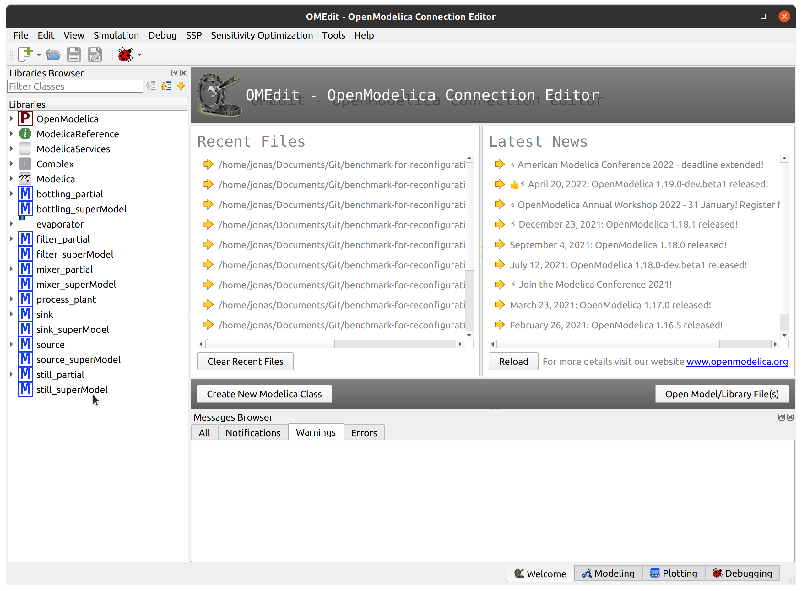
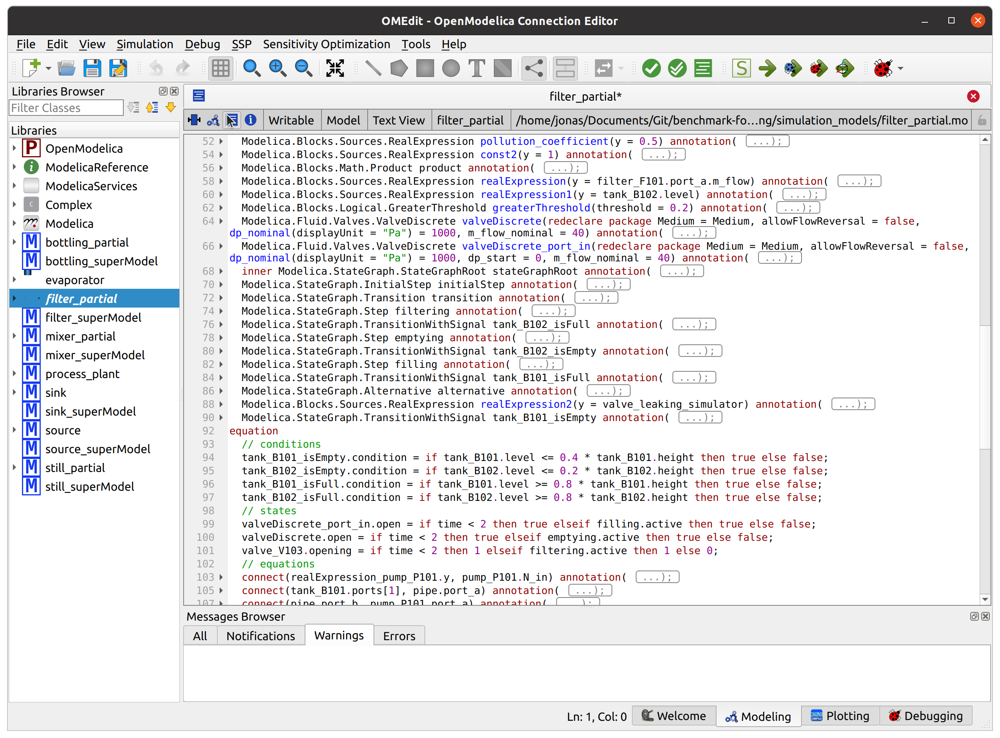
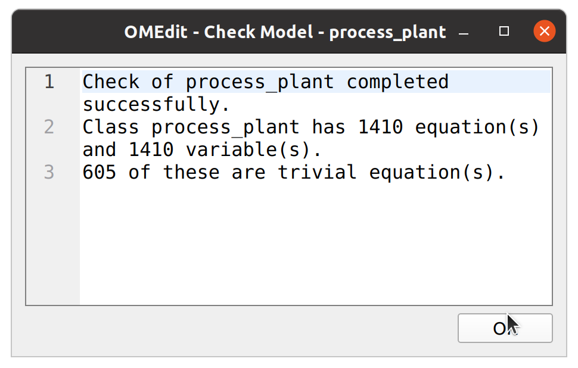
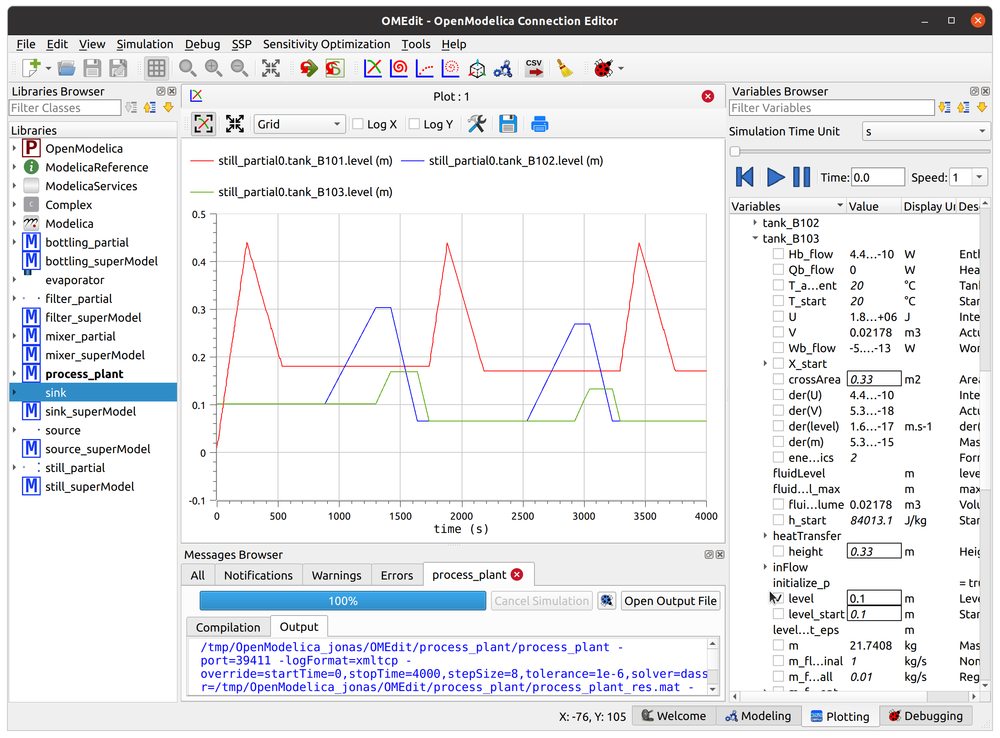

Creating custom simulations with OMEdit¶
Warning
Depending on your hardware, and simulation setup, creating datasets with BeRfiPl simulation models may take some time.
Besides the dataset generation with the Python API, you can also create individual simulation setups, and even manipulate the simulation model’s compositions. Therefore, we suggest this manual workflow including OpenModelica’s OMEdit. OMEdit is a graphical connection editor in OpenModelica, that also includes a text editor and graphical simulation environment.
To run manipulate a BeRfiPl simulation model in OMEdit, execute the following steps:
Step 1 - Start OMEdit¶
Within the starting window you will find an overview on the installed libraries on the left, recent projects in the middle, and warnings on the bottom.
Make sure, that OpenModelica and Modelica libraries are included.

Step 2 - Import simulation models¶
Import the BeRfiPl simulation models into the OMEdit environment, by selecting File > Open Model/Library File(s), pressing Crtl+O, or clicking on the blue symbol on the top left of your OMEdit window.
A pop-up window of your filemanager will appear.
Navigate to the BeRfiPl repository and select all simulation models within the simulation_models directory.
Click on open to import the models.

The loaded simulation models will appear in the library browser on the left of your OMEdit window.
{kind=link}
Step 3 - Manipulate a simulation model¶
By clicking on a simulation model or simulation superModel in your library browser you can view its composition. Simulation models in OpenModelica can be created with the visual editor or in text editor. To access the visual editor click on the Diagram view button. To access the text editor click on the Text view button.
Within the editors you can manipulate the connections of the simulation model’s components, or manually parametrize the individual components. Within the simulation superModel you can manipulate the hyper-parameter setup of your simulation model. To do so, either double click on them, or add the required arguments in the text editor.
To get an overview on all arguments you can visit the official OpenModelica documentation.
{kind=link}
Text view of a simulation model

Diagram view of a simulation model
Step 4 - Building a custom process plant¶
After manipulating the individual simulation models, you can assemble them into a process plant.
To do so, open the process_plant model.
You can build your process plant model, by either using Text view or Diagram view.
Building your process plant in Text view requires a list of all models, you want to employ in the plant. Note their class and their name in the model section of the script.
Subsequently, the connections of the models must be added.
The connections always(!) span from a models port_out to another models port_in.
The connections are noted as tuples in the equation section of the script.
Note
Every input and output of a simulation model needs to be connected to another simulation model. Use source and sink models as start and end points of a process plant.
{kind=link}
You can also graphically compose your own process plant.
To do so, be sure the process_plant model does not include any other simulation models anymore. You can check this in the Text view.
After checking that there are no models mentioned in the script, you can start dragging and dropping simulation models from your Library browser into the process plant model.

Once you dropped a simulation model, a pop-up window will appear and ask you to name the model.
Name the model, as you please, but make sure, that the model is not named the same as the simulation model.
E.g. naming filter_partial model in the process_plant script as filter_partial will cause an error.
Therefore giving it an index is recommended, like filter_partial0.
{kind=link}
Once you drpped all simulation models you want to employ in the process plant into the process_plant script, you can start connecting them.
The model blocks have small circles to indicate ports.
You can connect models, by clicking on a port and connecting it via another click to another port.
You can also add recurrences with this method.
Make sure to add meaningful recurrences (read the simulation model documentation for that) to generate meaningful datasets.
{kind=link}
You are now set to run your simulation.
Step 5 - Checking the model¶
Before running the simulation it is recommended to check your model, so you check for conflicts in your simulation model. To do so, click on the check model button, as indicated below.

A pop-up window will appear, giving an indication on whether the model compiled successfully, the number of differential equations and variables, and the number of trivial equations.
{kind=link}
Note
The number of equations and variables must be the same. Otherwise the simulation will fail. If the number of variables does not match the number of equations you made a mistake in the manipulation or composition of your simulation model.
Step 6 - Simulation setup¶
Next, you can set up your simulation.
Therefore, click on the simulate button as stated below.

Within the simulation setup you can specify a number of hyper-parameters. Feel free to tune on all of them. You can read about them in the official OpenModelica documentation.
The most important parameters, are Start Time, Stop Time, and Number of Intervals.
While start and stop time indicate the beginning and end of the simulated period, you can adjust the sampling with the number of intervals.
{kind=link}
Step 7 - Simulate¶
After pressing the simulation button, the simulation of your simulation model is executed. You can follow the progress in the progress bar. Depending on your model complexity and the employed parameters, the simulation may take some time.

Step 8 - Select parameters of interest¶
After simulation is finished, you can select you parameters of interest in the variable browser on the right side of the window, as indicated below. For each component of your simulation model the available range of variables is listed. Select you parameters of interest to plot them in the viewer.
{kind=link}
Step 9 - Export simulation variables¶
You can export the variables you selected in the variable browser.
To do so, click on the Export Variables button in the plotting view, as indicated below.